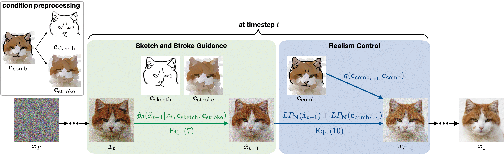

Generating images from hand-drawings is a crucial and fundamental task in content creation. The translation is difficult as there exist infinite possibilities and the different users usually expect different outcomes. Therefore, we propose a unified framework supporting a three-dimensional control over the image synthesis from sketches and strokes based on diffusion models. Users can not only decide the level of faithfulness to the input strokes and sketches, but also the degree of realism, as the user inputs are usually not consistent with the real images. Qualitative and quantitative experiments demonstrate that our framework achieves state-of-the-art performance while providing flexibility in generating customized images with control over shape, color, and realism. Moreover, our method unleashes applications such as editing on real images, generation with partial sketches and strokes, and multi-domain multi-modal synthesis.

@inproceedings{cheng2023wacv,
title = {Adaptively-Realistic Image Generation from Stroke and Sketch with Diffusion Model},
author = {Shin-I Cheng and Yu-Jie Chen and Wei-Chen Chiu and Hung-Yu Tseng and Hsin-Ying Lee},
booktitle = {IEEE Winter Conference on Applications of Computer Vision (WACV)},
year = {2023}
}